생산자동화산업기사 (2016-08-21 기출문제)
1과목: 기계가공법 및 안전관리
1. 밀링머신 호칭번호를 분류하는 기준으로 옳은 것은?
- 기계의 높이
- 주축모터의 크기
- 기계의설치 면적
- 테이블의 이동거리
(정답률: 76%)

2. 선반가공에서 절삭저항의 3분력이 아닌 것은?
- 배분력
- 주분력
- 이송분력
- 절삭분력
(정답률: 78%)
3. 센터리스 연삭기의 특징으로 틀린 것은?
- 긴 홈이 있는 가공물이나 대형 또는 중량물의 연삭이 가능하다.
- 연삭숫돌의 폭보다 넓은 가공물을 플랜지 컷 방식으로 연삭할 수 있다.
- 연삭숫돌의 폭이 크므로, 연삭숫돌지름의 마멸이 적고 수명이 길다.
- 센터가 필요하지 않아 센터 구멍을 가공할 필요가 없고, 속이 빈 가공물을 연삭할 때 편리하다.
(정답률: 80%)
4. 평면도 측정과 관계없는 것은?
- 수준기
- 링 게이지
- 옵티컬 플랫
- 오토콜리메이터
(정답률: 64%)
5. 축용으로 사용되는 한계 게이지는?
- 봉 게이지
- 스냅 게이지
- 블록 게이지
- 플러그 게이지
(정답률: 57%)
6. 밀링작업의 안전수칙에 대한 설명으로 틀린 것은?
- 공작물의 측정은 주축을 정지하여 놓고 실시한다.
- 급속이송은 백래쉬 제거장치가 작동하고 있을 때 실시한다.
- 중절삭할 때에는 공작물을 가능한 바이스에 깊숙이 물려야 한다.
- 공작물을 바이스에 고정할 때 공작물이 변형되지 않도록 주의한다.
(정답률: 80%)
7. 선삭에서 지름 50mm, 회전수 900rpm, 이송 0.25mm/rev, 길이 50mm를 2회 가공할 때 소요되는 시간은 약 얼마인가?
- 13.4초
- 26.7초
- 33.4초
- 46.7초
(정답률: 67%)
8. 유막에 의해 마찰면이 완전히 분리되어 윤활의 정상적인 상태를 말하는 것은?
- 경계 윤활
- 고체 윤활
- 극압 윤활
- 유체 윤활
(정답률: 71%)
9. 보링 머신의 크기를 표시하는 방법으로 틀린 것은?
- 주축의 지름
- 주축의 이송거리
- 테이블의 이동거리
- 보링 바이트의 크기
(정답률: 70%)
10. 윤활제의 급유방법으로 틀린 것은?
- 강제 급유법
- 적하 급유법
- 진공 급유법
- 핸드 급유법
(정답률: 72%)
11. 보통형(conventional type)과 유성형(plantary type) 방식이 있는 연삭기는?
- 나사 연삭기
- 내면 연삭기
- 외면 연삭기
- 평면 연삭기
(정답률: 60%)
12. 드릴의 자루(shank)를 테이퍼 자루와 곧은 자루로 구분할 때 곧은 자루의 기준이 되는 드릴 직경은 몇 mm 이하인가?
- 13
- 18
- 20
- 25
(정답률: 61%)
13. 그림과 같은 공작물을 양 센터 작업에서 심압대를 편위시켜 가공할 때 편위량은? (단, 그림의 치수단위는 mm이다.)
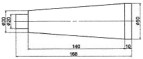
- 6mm
- 8mm
- 10mm
- 12mm
(정답률: 53%)
14. 밀링가공에서 공작물을 고정할 수 있는 장치가 아닌 것은?
- 면판
- 바이스
- 분할대
- 회전 테이블
(정답률: 56%)
15. 테이퍼 플러그 게이지(taper plug gage)의 측정에서 다음 그림과 같이 정반위에 놓고 판을 이용해서 측정하려고 한다. M을 구하는 식으로 옳은 것은?
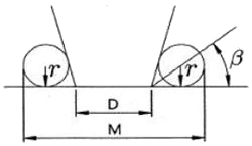
- M=D+r+rㆍcotβ
- M=D+r+rㆍtanβ
- M=D+2r+2rㆍcotβ
- M=D+2r+2rㆍtanβ
(정답률: 66%)
16. 창성식 기어절삭법에 대한 설명으로 옳은 것은?
- 밀링머신과 같이 총형 밀링카터를 이용하여 절삭하는 방법이다.
- 세이퍼 등에서 바이트를 치형에 맞추어 절삭하여 완성하는 방법이다.
- 세이퍼의 테이블에 모형과 소재를 고정한 후 모형에 따라 절삭하는 방법이다.
- 호빙 머신에서 절삭공구와 일감을 서로 적당한 상대운동을 시켜서 치형을 절삭하는 방법이다.
(정답률: 60%)
17. 원하는 형상을 한 공구를 공작물의 표면에 눌러대고 이동시켜 표면에 소성변형을 주어 정도가 높은 면을 얻기 위한 가공법은?
- 래핑(lapping)
- 버니싱(burnishing)
- 폴리싱(polishing)
- 슈퍼 피니싱(super-finishing)
(정답률: 58%)
18. 호환성이 있는 제품을 대량으로 만들 수 있도록 가공위치를 쉽게 정확하게 결정하기 위한 보조용 기구는?
- 지그
- 센터
- 바이스
- 플랜지
(정답률: 75%)
19. 다음 중 소재의 두께가 0.5mm인 얇은 박판에 가공된 구멍의 내경을 측정할 수 없는 측정기는?
- 투영기
- 공구 현미경
- 옵티컬 플랫
- 3차원 측정기
(정답률: 59%)
20. 리밍(reaming)에 관한 설명으로 틀린 것은?
- 날 모양에는 평행 날과 비틀림 날이 있다.
- 구멍의 내면을 매끈하고 정밀하게 가공하는 것을 말한다.
- 날 끝에 테이퍼를 주어 가공할 때 공작물에 잘 들어가도록 되어 있다.
- 핸드리머와 기계리머는 자루부분이 테이퍼로 되어 있어서 가공이 편리하다.
(정답률: 60%)
2과목: 기계제도 및 기초공학
21. 그림과 같은 입체도에서 화살표 방향이 정면일 때 평면도로 가장 적합한 것은?
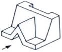
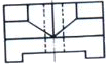
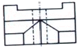
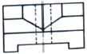
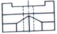
(정답률: 79%)
22. “왼 2줄 M50×3-6H"의 나사기호 해독으로 올바른 것은?
- 리드가 3mm
- 암나사 등급 6H
- 왼쪽 감김 방향 1줄 나사
- 나사산의 수가 3개
(정답률: 70%)
23. 기계제도에서 치수선을 나타내는 방법에 해당하지 않는 것은?
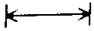
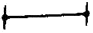
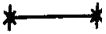
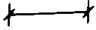
(정답률: 78%)
24. 그림과 같은 표면의 결 표시기호에서 M이 뜻하는 것은?
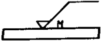
- 가공으로 생긴 선이 투상면에 식각
- 가공으로 생긴 선이 거의 동심원
- 가공으로 생긴 선이 두 방향으로 교차
- 가공으로 생긴 선이 여러 방향
(정답률: 78%)
25. 베어링 기호 “6012C2P4"에서 각 기호의 뜻을 설명한 것으로 틀린 것은?
- 60-베어링 계열 기호
- 12-안지름 번호
- C2-레이디얼 내부 틈새 기호
- P4-베어링 조합 기호
(정답률: 64%)
26. 기하 공차를 사용하는 이유로 가장 거리가 먼 것은?
- 직각 좌표의 치수방법을 변환시켜 간편하게 표시한다.
- 상호 결합되는 부품의 호환성을 확보한다.
- 생산 원가를 절감할 수 있는 방향으로 설계할 수 있다.
- 생산을 높일 수 있는 방향으로 공차를 적용할 수 있다.
(정답률: 60%)
27. 나사의 도시에서 완전 나사부와 불완전 나사부의 경계를 나타내는 선은?
- 굵은 실선
- 가는 실선
- 가는 파선
- 가는 1점 쇄선
(정답률: 60%)
28. 그림에서 가는 실선으로 나타낸 대각선 부분의 의미는?
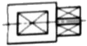
- 대각선으로 표시된 면이 구면임을 나타냄
- 대각선으로 표시된 면이 평면임을 나타냄
- 대각선으로 표시된 면은 가공하지 않음을 표시함
- 대각선으로 표시된 면만 열처리할 것을 표시함
(정답률: 85%)
29. 도면에
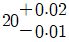
로 표시된 치수의 치수공차는 얼마인가?- 0.01
- -0.01
- 0.02
- 0.03
(정답률: 89%)
30. 다음 중 단면도의 분류에 있어서 그 종류가 다른 하나는?
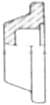
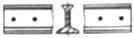
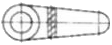
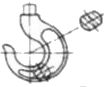
(정답률: 63%)
31. 길이가 일정한 막대에 좌측 끝단에는 7kgf, 우측 끝단에는 3kgf인 물체를 올려놓았을 때 수평을 유지하기 위한 받침대의 좌측과 우측의 길이 비율은? (단, 좌측 : 우측이다.)
- 7:3
- 3:7
- 7:10
- 10:7
(정답률: 84%)
32. 직경이 6cm인 원형 단면에 2400kgf의 인장하중이 작용할 때 발생하는 인장응력은 약 몇 kgf/cm2인가?
- 85
- 95
- 1⑤
- 125
(정답률: 57%)
33. 1μF콘덴서 5개를 직렬 연결했을 때 합성정전용량[μF]은?
- 0.2
- 0.5
- 2
- 5
(정답률: 63%)
34. 다음 그림과 같이 가로, 세로, 높이가 모두 100mm인 사각기둥에 직경이 50mm인 구멍이 윗면에서 밑면까지 수직으로 뚫려 있다면 사각기둥의 체적은 약 몇 mm3인가?
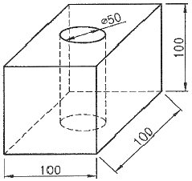
- 392500
- 740300
- 803650
- 965000
(정답률: 71%)
35. 질량이 4.5kg인 물체에 12N의 힘을 가했다면 이 물체의 가속도는?
- 2.67m/sec2
- 3.67m/sec2
- 26.7m/sec2
- 36.7m/sec2
(정답률: 67%)
36. 단면적이 10mm2이고, 길이가 1km인 구리선의 저항[Ω]은? (단, 구리선의 고유저항은 1.77×10-8Ωㆍm이다.)
- 0.177
- 1.77
- 17.7
- 177
(정답률: 63%)
37. 뉴턴의 운동 제2법칙에 맞는 식은? (단, F는 힘, m은 질량, a는 가속도이다.)
- F=ma
- F=m/a
- F=m2a
- F=ma2
(정답률: 87%)
38. 하중 500kgf를 SI단위로 변환하면 약 얼마인가?
- 390N
- 4903N
- 5803N
- 9801N
(정답률: 72%)
39. 전동축은 비틀림모멘트 T와 굽힘모멘트(M)를 동시에 받는다. 이 때의 상담굽힘 모멘트 Me는?
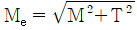
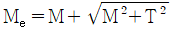
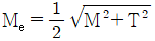
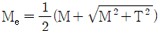
(정답률: 51%)
40. 임의의 점 P에서 Q까지의 6C의 전하를 이동시키는데 12J의 일을 하였다면 전위차는?
- 1V
- 2V
- 4V
- 6V
(정답률: 81%)
3과목: 자동제어
41. USB장치 및 USB버스에 대한 설명으로 틀린 것은?
- 플러그 앤 플레이 설치를 지원하는 외부 버스이다.
- 병렬 버스 장치를 연결할 수 있도록 해주는 컴퓨터 인터페이스이다.
- 컴퓨터를 종료하거나 다시 시작하지 않아도 USB 장치를 연결하거나 연결을 끊을 수 있다.
- 단일 USB포트를 사용하여 스피커, 전화, CD-ROM 드라이브, 스캐너 등 주변 기기를 연결할 수 있다.
(정답률: 65%)
42. 리밋 스위치의 기호로 옳은 것은?
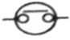
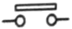
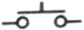
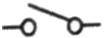
(정답률: 72%)
43. 3/2-Way 방향제어 밸브에 대한 설명으로 틀린 것은?
- 연결구의 수가 2개이다.
- 정상상태 열림형도 있다.
- 정상상태 닫힘형도 있다.
- 솔레노이드 작동, 스프링 리셋(복귀)형도 있다.
(정답률: 74%)
44. f(t)=t2의 라플라스 변환은?
- 1/s
- 1/s2
- 2/s3
- 2/s4
(정답률: 56%)
45. 다음 블록선도에서 합성 전달함수는?
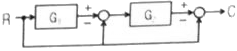
- 1+G1G2
- -1+G1+G2
- -1-G1-G2G1
- -1-G2+G1G2
(정답률: 46%)
46. 온도를 전압으로 변환시키는 특징을 가진 것은?
- 광전지
- 열전대
- 차동변압기
- 측온저항체
(정답률: 76%)
47. 다음 중 공압 장치의 구성기기로 가장 거리가 먼 것은?
- 윤활기(Iubricator)
- 축압기(accumulator)
- 공기 압축기(compressor)
- 애프터 쿨러(after cooler)
(정답률: 57%)
48. 다음 데이터 통신 방식 중 직렬 전송 방식이 아닌 것은?
- 반 이중방식
- 전 이중방식
- 단방향 전송방식
- 스트로브-애크놀리지방식
(정답률: 66%)
49. 동기형 AC서보 전동기의 특징으로 틀린 것은?
- 교류 전원을 사용한다.
- 회전자에 영구자석을 사용한다.
- 정류자 브러시가 없어 유지 보수가 용이하다.
- 제어 시 회전자 위치를 검출할 필요가 없어 회전 검출기가 필요없다.
(정답률: 62%)
50. 다음 자동제어 시스템의 주요 구성요소 중에서 오차를 찾아내는 부분은?
- block
- direct aeeow
- takeout point
- summing point
(정답률: 62%)
51. 함수
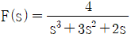
를 라플라스 역변환한 결과값 f(t)은?- 2-4e-t+2e-2t
- 2-4e-t-2e-2t
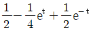
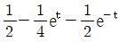
(정답률: 37%)
52. 다음 그래프의 Laplace 변환은?
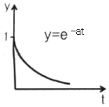
- as
- a/s
- 1/(s+a)
- 1/(s-a)
(정답률: 73%)
53. 주파수 영역에서 시스템의 응답성 및 안정성을 표시하기 위한 값이 아닌 것은?
- 대역폭
- 이득 여유
- 위상 여유
- 피크 시간
(정답률: 60%)
54. C언어의 조건에 따른 흐름 제어문에 해당되지 않은 것은?
- if문
- if-else문
- do-while문
- switch-case문
(정답률: 52%)
55. 그림에서 2개의 피스톤 ㉠, ㉡의 단면적 A1, A2를 각각 2m2, 10m2일 때 F1으로 1N의 힘으로 가하면 F2에서 생성되는 힘[N]은?
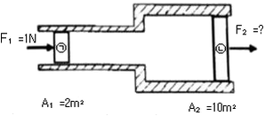
- 5
- 10
- 20
- 25
(정답률: 66%)
56. 다음 중 주파수영역에서 자동제어계를 해석할 때 기본 입력으로 많이 사용되는 것은?
- 계단입력
- 등속입력
- 등가속입력
- 정현파입력
(정답률: 68%)
57. 전기식 서보기구에 대한 설명으로 옳은 것은?
- 작동속도가 유압식에 비해 느리다.
- 유압식에 비해 큰 출력을 얻을 수 있다.
- 유압식에 비해 경제성과 취급이 용이하다.
- 전기식 서보기구에는 분사관식 서보기구가 있다.
(정답률: 64%)
58. 다음 블록선도의 전체 전달함수를 구하는 식으로 옳은 것은?
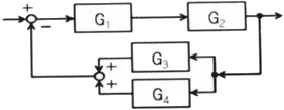
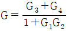
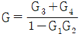
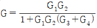
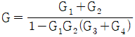
(정답률: 70%)
59. 비례동작에 의해 발생되는 잔류편차를 제거하기 위한 것으로 제어결과가 진동적으로 되기 쉬우나 잔류편차가 작아지는 제어동작은?
- 미분 제어동작
- 비례 제어동작
- 비례미분 제어동작
- 비례적분 제어동작
(정답률: 65%)
60. 제어용 기기에 대한 설명으로 틀린 것은?
- 전기 릴레이는 다수 독립회로를 개폐할 수 있다.
- 도체에 흐르는 전류의 크기는 도체의 저항에 반비례한다.
- 전기 접점에서 상시 열려 있다가 작동되면 닫히는 접점을 b접점이라 한다.
- 전자 접촉기란 전자석의 동작에 의하여 부하 전로를 개폐하는 접촉기를 말한다.
(정답률: 73%)
4과목: 메카트로닉스
61. 가공 공정을 줄이기 위해 선삭, 밀링가공, 드릴링 등의 작업을 모두 할 수 있는 기계는?
- 선반
- 호빙 머신
- 복합 가공기
- 다축 드릴 머신
(정답률: 78%)
62. 일반 선반작업에서 할 수 없는 작업은?
- 홈 절삭
- 기어 절삭
- 나사 절삭
- 테이퍼 절삭
(정답률: 75%)
63. 명령어가 실행 중일 때 CPU가 사용 중인 내부 데이터를 일시적으로 저장하는 것은?
- 기억장치
- 레지스터
- 중앙처리장치
- 산술논리연산장치
(정답률: 75%)
64. 발진회로를 정현파 발진회로와 비정현파 발진회로로 구분할 때, 비정현파 발진회로에 해당되는 것은?
- LC 발진회로
- RC 발진회로
- 수정 발진회로
- 멀티바이브레이터 발진회로
(정답률: 55%)
65. 다음 불 대수식 중 틀린 것은?
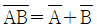
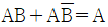
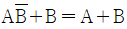
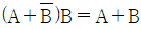
(정답률: 59%)
66. 다음 식과 같이 표현되는 순시적류에 대한 설명 중 틀린 것은?
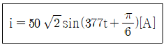
- 실효값은 50A이다.
- 최대값은
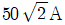
이다. - 주파수는 약 60Hz이다.
- 이 파형의 주기는
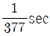
이다.
(정답률: 63%)
67. 센서에 대한 설명이 옳은 것은?
- 리드 스위치는 빛을 검출하는 센서이다.
- 근접 스위치는 물체의 변형력을 검출하는 센서이다.
- 자기센서로 사용되는 홀조사는 압전효과를 이용한 것이다.
- 로드 셀은 중량에 비례한 변형을 저항변화로 변환하는 센서이다.
(정답률: 60%)
68. 아래 회로는 간단한 디지털 조도계 회로도이다. 다음 중 회로도의 7-세그먼트 옆 ⓐ에 가장 적합한 소자는?
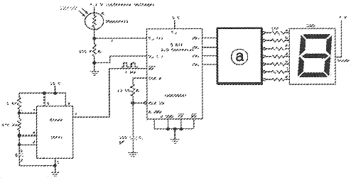
- 디코더
- 엔코더
- 카운터
- 타이머
(정답률: 58%)
69. 전류에 관한 설명으로 옳은 것은?
- 전류는 저항에 비례한다.
- 전류는 전기적인 압력에 반비례한다.
- 전류의 이동방향은 전자의 이동방향과 같다.
- 전자의 이동방향과 전류의 흐름은 반대이다.
(정답률: 61%)
70. 직경 32mm인 고속도강 드릴을 사용하여 절삭속도 50m/min으로 공작물에 구멍을 뚫을 때 드릴링 머신의 스핀들 회전수[rpm]는 약 얼마인가?
- 300
- 400
- 500
- 600
(정답률: 67%)
71. 다음 프로그램과 회로도에서 푸시버튼 스위치가 SW6은 ON, SW7은 OFF 상태일 때의 이진수 8비트 표현값으로 옳은 것은? (단, x=리던던시, JP3의 1번 단자가 LSB이고 8번 단자가 MSB이다.)
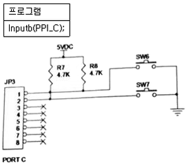
- xxxx xx00
- xxxx xx01
- xxxx xx10
- xxxx xx11
(정답률: 54%)
72. 열기전력이 다른 두 금속을 접합하여 만든 열전대를 이용하여 만든 스위치는?
- 광전 스위치
- 리드 스위치
- 온도 스위치
- 전자 계전기
(정답률: 79%)
73. 물체를 자화시킬 때 그림과 같이 N극 가까운 쪽에 N극, 자석 S극 쪽에 S극으로 자화되는 물체로 옳은 것은?
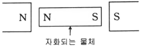
- 정자성체
- 강자성체
- 반자성체
- 최전도체
(정답률: 76%)
74. 온도에 민감한 저항체라는 의미를 가지고 있으며 온도변화에 따라 소자의 전기저항이 크게 변화하는 대표적인 반도체 감온 소자는?
- 열전쌍
- 로드 셀
- 서미스터
- 적외선 센서
(정답률: 70%)
75. 마이크로프로세서의 구성요소 중 조건 코드 레지스터 또는 플레그 레지스터하고도 하며, 산술 논리 연산 장치에서 수행한 최근의 처리결과에 관한 정도를 담고 있는 것은?
- 범용 레지스터
- 상태 레지스터
- 누산기 레지스터
- 명령어 레지스터
(정답률: 54%)
76. RS 플립플롭(Flip-Flop)에서 SET(S)입력에 0, RESET(R) 입력에 1을 입력하면 출력(Q)은?
- Low(0)
- High(1)
- 불확실
- 이전상태 유지
(정답률: 60%)
77. 4상 스테핑 모터의 여자 방식으로 사용하지 않는 방법읁?
- 1상 여자법
- 2상 여자법
- 1-2상 여자법
- 3상 여자법
(정답률: 75%)
78. 코일에 흐르는 전류가 4배로 증가하면 축적되는 에너지는 어떻게 변하는가?
- 1/4로 감소
- 4배로 증가
- 1/16로 감소
- 16배로 증가
(정답률: 54%)
79. 스테핑 모터에 대한 설명으로 틀린 것은?
- 영구자석 스텝 모터의 경우 무여자 정지 때도 유지토크를 갖는다.
- 유니폴라 구동 방식은 여자 전류가 한 방향만인 방식이다. (+ 또는 0)
- 바이폴라 구동 방식은 유니폴라 구동 방식에 비하여 더 큰 토크를 얻을 수 있다.
- 1분 간 가해진 펄스 수를 n, 스텝각(deg)을 θs이라 하면 회전수(rpm) N=n×θs×180이다.
(정답률: 59%)
80. 저손실이며 전류의 상승시간을 개선한 스테핑 모터의 구동법은?
- PAM
- PWM
- 바이폴라
- 유니폴라
(정답률: 66%)